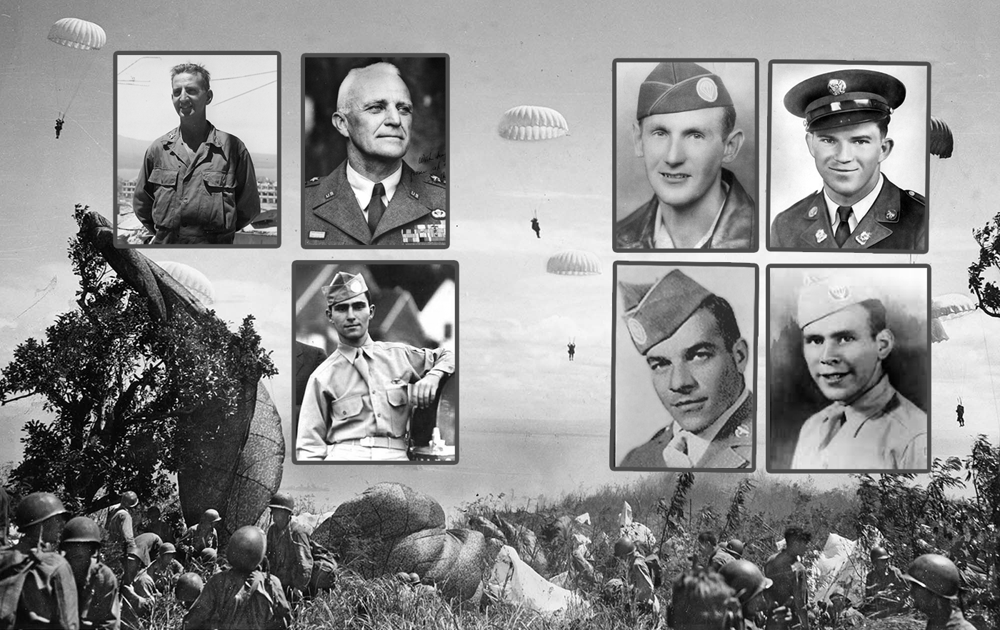
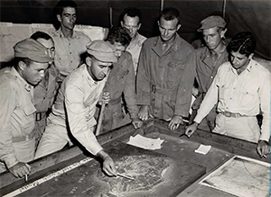
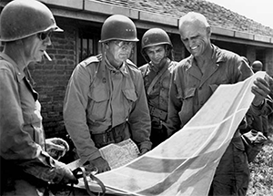
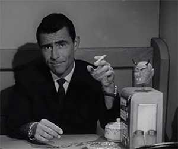
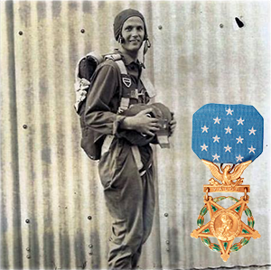
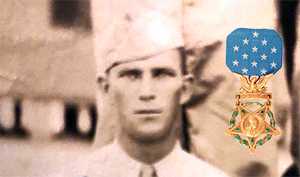
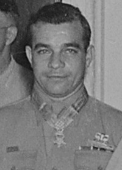
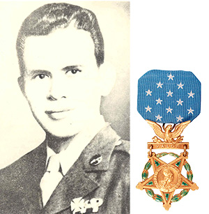

Click on the pictures below to learn more about some of the key figures who served as Pacific Paratroopers during World War II:

George M. Jones,
503rd RCT
(1911-1995)
A 1935 graduate of West Point, Col. Jones commanded the 503rd RCT in New Guinea and the Philippines, where he earned the nickname "The Warden." He later served in the Korean War, retiring from the Army as a Brigadier General in 1968.

Joseph M. Swing,
11th Airborne
(1894-1984)
A 1915 graduate of West Point and veteran of World War I, Gen. Swing commanded the 11th Airborne from the time they were formed in 1943 until 1948. After retiring from the Army in 1954, Swing was appointed by his West Point classmate President Eisenhower to be head of the United States Immigration and Naturalization Service.

Rod Serling,
11th Airborne
(1925-1975)
Volunteering to be a paratrooper straight out of high school, Rod Serling would later become a renowned radio, TV and film writer, best known as the creator and host of The Twilight Zone. He died of a sudden heart attack in 1975 at the age of 50.

Ray E. Eubanks,
503rd RCT
(1922-1944)
During the Battle of Noemfoor, Sgt. Eubanks was in an intense firefight with Japanese troops. According to his citation, "In spite of his painful wounds he immediately charged the enemy and using his weapon as a club killed 4 of the enemy before he was himself again hit and killed." For these actions, he was posthumously awarded the Medal of Honor.

Elmer E. Fryar,
11th Airborne
(1914-1944)
During the Battle of Leyte, "an enemy sniper appeared and aimed his weapon at the platoon leader. Pvt. Fryar instantly sprang forward, received the full burst of automatic fire in his own body and fell mortally wounded. With his remaining strength he threw a hand grenade and killed the sniper." For these actions, he was posthumously awarded the Medal of Honor.

Lloyd G. McCarter,
503rd RCT
(1917-1956)
During the Battle of Corregidor, Pvt. McCarter was in an intense firefight with Japanese troops. His citation states, "He was seriously wounded; but, though he had already killed more than 30 of the enemy, he refused to evacuate until he had pointed out immediate objectives for attack." He survived the battle and was awarded the Medal of Honor by President Truman.

Manuel Pérez Jr.,
11th Airborne
(1923-1945)
During the Battle of Luzon, Pvt. Perez became a one-man army. His citation reads, "Single-handedly, he killed 18 of the enemy in neutralizing the position that had held up the advance of his entire company." He was killed in action a month later and was posthumously awarded the Medal of Honor.
